Many common rearrangements are induced by the formation of electron deficient sites which attract neighboring non-bonding or bonding electron pairs. These cationic rearrangements have been discussed elsewhere. In this chapter rearrangements and related reactions resulting from anion induced bonding shifts will be examined.
Two examples of 1,2-phenyl shifts are shown in the following diagram. In each case the driving force for the rearrangement is the conversion of a less stable anion into a more stable one. The reversible addition of hydroxide ion to one of the benzil carbonyl groups produces an intermediate which undergoes a pinacol-like rearrangement. In contrast to the carbocation "pull" that initiates the pinacol rearrangement, this benzilic acid rearrangement complements a weak electrophilic pull by the adjacent carbonyl carbon with the "push" of the alkoxide anion. A rapid proton transfer then forms the relatively stable carboxylate anion. In the second example, a very reactive 1º-carbanion (pKa ≈ 45) is converted to a diphenyl resonance stabilized carbanion (pKa ≈ 34).
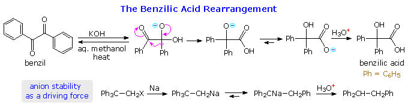
Similar 1,2-shifts of hydrogen or alkyl groups may also be favored by loss of a stable anion, as illustrated by the following example. Once again, an alkoxide anion provides a "push", and loss of the stable tosylate leaving group terminates the rearrangement. The LiAlH4 reagent not only generates the oxy-anion, but also reduces the resulting carbonyl products to alcohols. This rearrangement contrasts with the Wagner-Meerwein rearrangement in which a stable anion leaving group initiates the process by generating a carbocation species.
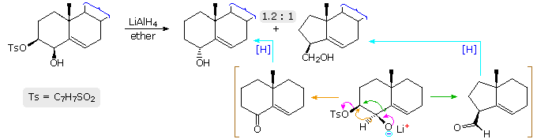
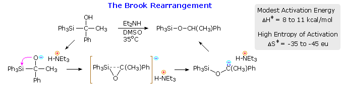
Three examples of an unusual 1,2 alkyl shift from oxygen to carbon, known as the [1,2]-Wittig rearrangement, are shown below. Here a powerful base generates a reactive carbanion alpha to an ether. An intramolecular shift of an alkyl or aryl group then creates a much more stable alkoxide anion, which in the last example eliminates cyanide anion. Many studies of the mechanism of this rearrangement have been conducted, and it has been established to be intramolecular. The initially created negative charge weakens the other carbon-oxygen bond, enabling a rapid radical-radical anion dissociation-recombination process to take place (green-shaded box).
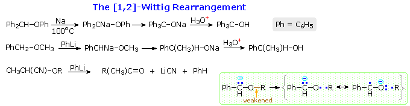
A related reaction involving a 1,2-shift from nitrogen to carbon is known as the Stevens rearrangement. Many aspects of this transformation are similar to the Wittig rearrangement. Clicking on the above diagram will display examples of the Stevens rearrangement.
Base catalyzed reactions of allylic ethers and amines may take different paths depending on substitution and conditions. Often [2,3]-sigmatropic shifts occur in preference to others. The example shown below is illustrative. Both the [2,3]-shift and the minor [1,4]-shift are regio and stereospecific, suggesting a structured transition state for each.
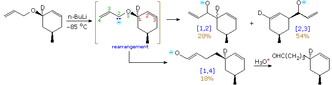
[2,3]-Sigmatropic shifts of this kind are commonly called [2,3]-Wittig rearrangements. A general example involving diallyl ethers is shown in the following diagram. By clicking on the diagram the cyclic chair-like mechanism proposed to account for the stereospecificity of this reaction will be displayed. A second click on the diagram will show two additional examples which demonstrate the synthetic utility of the reaction.
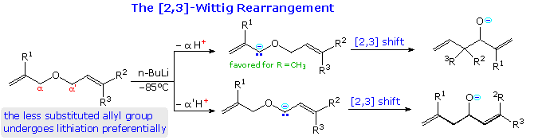
The Sommelet-Hauser rearrangement, a reaction that often competes with the Stevens rearrangement, might be classified as a [2,3]-sigmatropic shift. However, it may also be considered an addition-elimination process, as drawn below. A nitrogen ylide, formed by reaction of a quaternary ammonium salt with strong base, is the reactive intermediate. This species may be trapped by an electrophile, but normally rearranges in the fashion shown. The Truce-Smiles rearrangement displayed by clicking on the diagram represents another such aryl relocation, in this case a 1,4-shift.
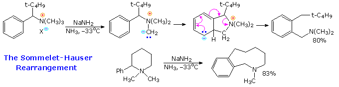
Treatment of α-halogenated ketones, having acidic α'-hydrogens, with nucleophilic bases often leads to a skeletal rearrangement known as the Favorskii rearrangement. As depicted in the following diagram, this reaction is believed to proceed by way of a cyclopropanone intermediate. Facile conversion of cyclopropanones to hydrates and hemiacetals (relief of angle strain) occurs, and the cyclopropoxide conjugate base undergoes ring opening and solvent protonation. In the case of unsymmetrical cyclopropanones the ring cleavage takes place on the side that yields the more stable carbanion or leads to elimination of a stable anion (second example). A debate concerning the nature of the carbon-carbon bond formation step now favors direct (synchronous) formation of the cyclopropanone by a 1,3-elimination, as shown, rather than initial ionization of the enolate to a zwitterionic species such as that drawn in the green box. However, in polar solvents this intermediate may play a role.
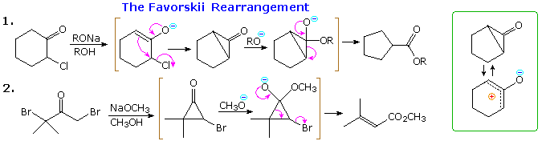
Epoxy alcohols undergo reversible intramolecular epoxide opening reactions known as the Payne rearrangement. The following diagram illustrates three such reactions, and a general mechanism is written in the gray-shaded box. The equilibrium usually favors the more highly substituted epoxide moiety. As expected for an SN2, process, these transformations are stereospecific. Although such equilibria may not always lie in the desired direction, subsequent reaction may divert one of the components to a useful product. An example will be shown by clicking on the diagram. Even though the terminal epoxide is a minor component of the Payne equilibrium, its kinetic advantage in the ring opening step determines the final product. The course of reaction in the absence of the Payne rearrangement is displayed in the gray-shaded box.
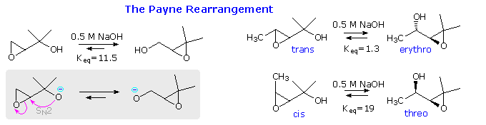
An interesting and generally useful skeletal transformation, involving specific carbon-carbon bond cleavage with accompanying conversion of certain sigma-bonds to pi-bonds, is known as the Grob fragmentation. As background for discussing this reaction, it is helpful to define the concept of ethylogy, which may be regarded as the sigma-bond equivalent of vinylogy. This is illustrated in the following diagram. Here a simple nucleophilic fragmentation at M is converted to an ethylagous analog by the insertion of a two carbon (ethyl) segment between the reacting moieties.
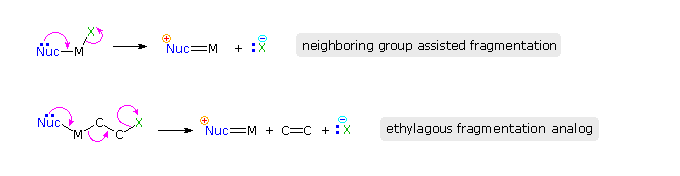
A simple example of an ethylagous relationship may be found by comparing the acid or base-catalyzed loss of water from a carbonyl hydrate with the retro aldol cleavage reaction. This will be shown above by clicking on the diagram. The carbon atoms of the ethylagous unit are colored green.
Whenever functional group interactions occur through a chain of covalent bonds (sigma or pi), stereoelectronic factors will play an important role. This is demonstrated by the stereoisomeric amino chlorides in the following diagram. The non-ethylagous analog for the reaction is drawn in the gray-shaded box. A Grob fragmentation takes place in the top example, because the orbitals of the bonding and non-bonding electron pairs participating in the reaction are aligned properly. These are the non-bonding pair on nitrogen and the bonding pairs in the green-colored covalent bonds. Their alignment is a function of their relative orientation on the brown-colored bonds. As drawn, the reacting electron pairs on each such bond are anti, the preferred configuration for maximum overlap. In the bottom epimer the chlorine atom is not oriented properly, and a slower bimolecular E2 elimination is observed.
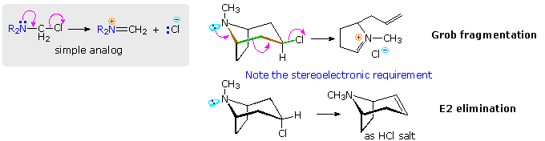
Other examples of Grob fragmentations will be shown above by repeated clicking on the diagram. The first is a useful ring enlargement reaction in which the common bond of a fused bicyclic skeleton is cleaved, yielding a larger carbocycle. Applications of this kind may be initiated in several ways, one interesting case being that shown in part 6 of a curved arrow problem. A second click on the diagram displays a Grob-like fragmentation, favored by the relief of ring strain in the four-membered ring.
A one-pot reaction in which a starting compound is transformed into a skeletally rearranged product by way of several unremarkable steps may appear to be extraordinary and unexpected. One such example is the conversion of the sesquiterpene santonin into santonic acid on heating with base. From the formulas shown in the following equation, this reaction not only adds one equivalent of water (expected if the lactone is opened), but also creates a new carbonyl group and removes both carbon-carbon double bonds. The nature of the transformation of santonin to santonic acid remained unknown for many years, but was resolved in 1948 by the work of R. B. Woodward and coworkers at Harvard. Clicking on the diagram, will display the structures of santonic acid and its oxidative products.
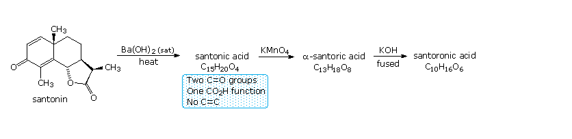
The mechanism by which this remarkable change takes place will be displayed above by a second click on the diagram. Initial hydrolysis of the lactone to santoninic acid is followed by isomerism of the α,β-unsaturation to a β,ν-location and tautomerization. The resulting diketone, in its cis-fused configuration, then undergoes an intramolecular Michael reaction, forming a new five-membered ring (note the colored bond).
Return to Table of Contents
This page is the property of The Edvibe Team. Comments, questions and errors should be sent to contact@edvibe.co.ke. These pages are provided to the IOCD to assist in capacity building in chemical education. 05/05/2013